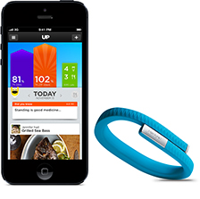
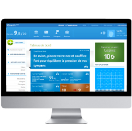

Quantify Yourself
SELF KNOWLEDGE
THROUGH NUMBERS
INTRODUCTION
Originellement l'espèce humaine est née avec une capacité de mesurer et de quantification des éléments composants son environnement naturel. Avec le développement des outils et la sédentarisation ces aptitudes ont disparus et au fil du temps des instruments de mesures ont vu le jour pour pallier à ce manque. Aujourd’hui l’homme, totalement sédentarisé vit dans un environnement sûr et dispose d’un confort relatif, cela étant il est devenu incapable de de jauger son poids, son activité physique, et juger avec certitude de ce qu’il est bon de manger pour lui. Les premiers instruments de mesures tel que le thermomètre ou le pèse-personne on vus le jour pour compenser certains de ces manques en tant que prémices de la “mesure de soi”. La révolution industrielle a vu naître la multiplication d’instruments de mesure en tout genre(composition chimique, distances, puissance, énergies, température) mais c’est avec l’avènement de l’informatique de la micro-informatique (à savoir la miniaturisation des capteurs et composant électroniques) et des NTIC que le mouvement de “mesure de soi” connaît aujourd’hui un nouveau souffle. cette pratique a été démocratisée et à permis l’émergence de cette tendance.
Et plus les technologies évoluent, plus il est facile de “se mesurer”.

Le mouvement du quantified self à été lancé en 2007, par Gary Wolf et Kevin Kelly. Ils ont organisé des rencontres, les QS Show & Tell, permettant aux adeptes du QS de témoigner de leurs pratiques. Trois ans plus tard, Gary Wolf présentait le QS lors d’une conférence TED, qui donna suite, à une conférence internationale en Californie. Le mouvement est donc lancé.
Même si ce mouvement été déjà présent en France dans les années 2000, ce n’est qu’a la suite des ces conférences que le mouvement est réellement “démocratisé”. En 2011, les parisiens amateurs du QS fondent le QS Paris, qui devient en 2013 MyDataLabs, une association organisant des talk show autour de la récolte des données personnelles.
2007
création du mouvement
2011
Conférence international sur le QS
2013
Création de l'association MyDataLabs à Paris
Qu'est ce que le Q.S. ?
Le Quantified Self est un mouvement qui regroupe les outils, les principes et les méthodes permettant à chacun de mesurer ses données personnelles, de les analyser et de les partager.
mesurer
récupere
analyser
les données
biométriques
Signifiant dans un sens large “la mesure du vivant”, il s’agit de toute les données en rapport aux techniques d’identification d’une personne. Celle-ci se faisant en fonction de caractéristiques biologiques propres à l'individu telles que les empreintes digitales, les traits du visage, etc.
nutritionnelles
Il s’agit de toutes les valeurs nutritives des aliments que l’on consomme (habituellement récoltées en calories) qui, une fois analysées , permettront d’assurer un bon rapport entre la nourriture et la santé.
cardiologiques
La cardiologie étant la spécialité médicale qui étudie le cœur et ses maladies, ces données peuvent être analysées sous plusieurs aspects : le rythme cardiaque, la pression et les débits dans le sang.
médicales
Ce sont diverses informations physiques directement reliées à notre santé médicale, souvent en rapport avec une maladie ou une certaine pathologie.
Personnelles
& Psychologiques
Il s’agit de données plus ou moins intimes reliées à notre humeur, nos ressentis, nos rêves ou même notre productivité. Ces données ont un côté beaucoup plus narratif que scientifique.C’est à travers des pratiques comme le lifelogging, lifestreaming, ou lifecatching désignant le fait d'enregistrer et d'archiver toutes les informations de sa vie que ces données sont transmises. Cela comprend tous les textes, toutes les informations visuelles, tous les fichiers audio, toute l'activité médias, ainsi que toutes les données biologiques provenant de capteurs sur le corps.
les outils
objet connecté + application
Les objet connectés allié à une application smartphone. Le principe général étant de garder l’objet connecté tout le temps sur sois, et l’application permet quand à elle de visualiser les données récoltées.
application
Aujourd'hui, la majorité des smartphones possèdent des capteurs nécéssaire à la récolte de données, telle que la géolocalisation par exemple. L'application permet de visualiser les données.
site web
Visite ponctuelle, non automatisée. Le site web sert d'interface afin de rentrer des données de nous même, et permet un suivit personalisé et surtout volontaire de nos données.

ressentis
“Logger” des informations en gardant une trace de notre propre vécu, ressenti, rêves afin d’aider à apprendre à mieux se connaître.
pourquoi le Q.S.
Maybe it’s the “self” part, as subject rather than object? It’s not just that your “self” is being quantified, it’s that you’re the one doing it, or the one controlling it, or the primary audience for the data.
C’est peut-être le “soi”, comme sujet plutot qu’objet. Ce n’est pas juste le soi qui est quantifié, mais c’est toi qui prend l’initiative de le faire, de le contrôler, toi la première audience pour ces données.
Avant tout, il faut présicer une chose, tout est quantifiable chez l’homme, cependant, la différence du Q.S. tient dans la citations ci-dessus, ce qui change c’est le fait que la personne choisit d’elle même de mesurer les données sur elle. Et ce besoin vient de plusieurs facteurs.
Initiative personnelle
pratique présente
depuis toujours
opportunité pour
les ingénieurs
UN BESOIN DEVENU TENDANCE
La volonté de stocker des données personnelles a toujours été présente. Avec l’évolution des capteurs ainsi que la démocratisation des smartphone, il est devenu très simple de stocker nos données personnelles, avant même l’apparition des applications quantified self. Ce fut donc une opportunité pour les ingénieurs, inventeurs.. qu’ils ont saisit.
Alors, nous pouvons dire, que le besoin a toujours été présent, et qu’il devenu tendance avec les nouvelles technologies.
Bien-être
Apprendre à mieux se connaître
l’identification au super-héros
En supposant que chacun d’entre nous a une image de soit d’un “super héros de tout les jours”, nous avons tous le rêve de pouvoir gagner des points et de monter d’un niveau. C’est celà qui est aujourd’hui possible en mesurant et en analysant les données de vie de tous les jours.
monter d'un niveau
statistique
solution facile
tendance vers le comportementalisme
Depuis une bonne cinquantaine d’année on aperçoit l’arrivée d’une tendance vers les méthodes comportementalistes. Ce sont des méthodes qui contrairement à l’approche psychanalytique traditionnelle du “racontez-moi votre enfance” sont essentiellement basées sur des approches purement scientifiques et statistiques. Aujourd’hui, grâce à toute cette avancée technologique, cette méthode est beaucoup plus facilement rencontrée sous la forme de pages web ou applications présentées comme la solution facile à des problèmes liés à l’amélioration de soit.
conclusion
Pour résumer, le Quantified Self est donc un mouvement, mettant en évidence un besoin qui existait déjà depuis quelques années. Ce mouvement s'appuie sur différents outils, et ce grâce aux développement des technologies, permettant ainsi la récolte de nombreuses données sur “soi”.
Dans les années à venir, les solutions matérielles et logicielles proposées par les start-ups vont continuer à croître. Il est donc certain qu’au niveau des usages, le Quantified Self va progresser. Cependant, même si il y à déjà de nombreux adeptes de cette pratique, beaucoup restent encore septiques et ont des craintes par rapport aux partage de données personnelles.
Mais d’un autre côté, rien n’oblige l’utilisateur à partager ses données...